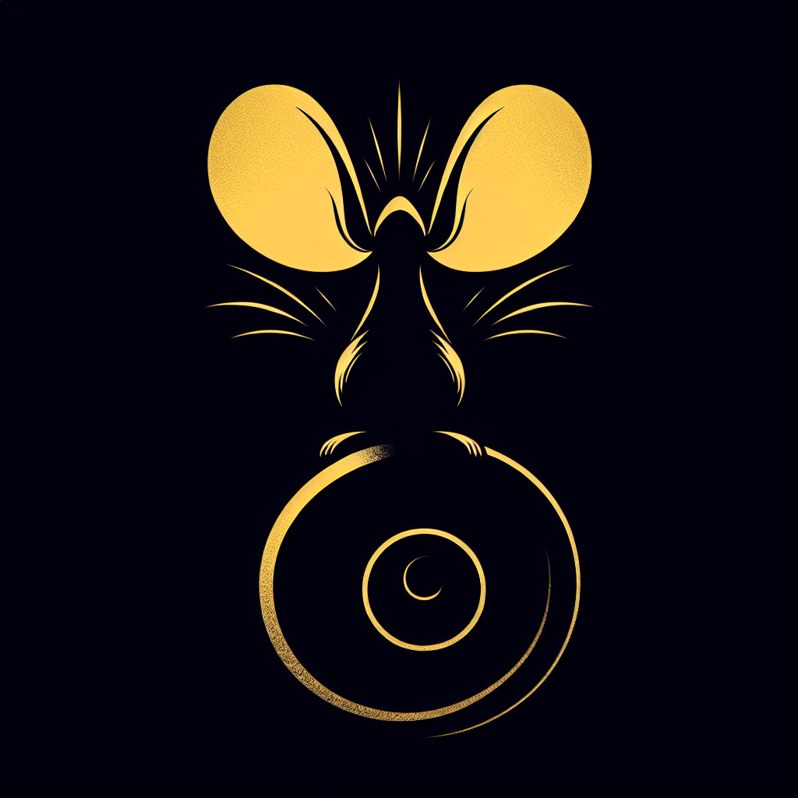

Tail to Tail: The Untold Story of Ratopolis' Whisper Networks
In the bustling heart of Ratopolis, beneath the bustling streets and lively markets, whispers flow like an underground stream, shaping the very fabric of our society. These shadowy networks, despite efforts to remain hidden, wield significant influence over our city’s politics and privacy.

Whisper networks have been a part of Ratopolis' history for generations, passed down through the whiskers of our ancestors. Originally formed to share sensitive information and warnings discreetly, these secretive channels have evolved, playing a pivotal role in the city’s most critical decisions.
Renowned historian Cheddar Chomp explains, "Whisper networks began as a way for rats to protect their families during tumultuous times. Over the years, they've become more sophisticated, influencing everything from political elections to major city projects."
Operating behind the scenes, these networks rely on a coded language of tail-twitches, paw-signals, and subtle squeaks. High-ranking members of society use these methods to communicate under the radar, avoiding public scrutiny. Recent investigations reveal how whisper networks have tipped the scales in political races and swayed public opinion on pressing issues.
"It's like a game of telephone, but with real consequences," says Whiskers McSqueak, a local activist. "You never know who's pulling the strings, and that’s what makes it so dangerous. We need transparency in our society, not hidden agendas."
On the flip side, some argue that whisper networks serve a purpose, providing a safe way to share crucial information without fear of retaliation. Squeaky Clean, a renowned journalist, notes, "In Ratopolis, the walls have ears, and the tails have tales. Whisper networks are the city's worst-kept secret, but they've also protected whistleblowers and exposed corruption."
However, the existence of these networks raises serious privacy concerns. As more rats become aware of the clandestine chatter, the debate over ethics intensifies. "While they can be useful, they also breed mistrust," adds political analyst Cheddar Chomp. "We need an open government that values transparency and accountability."
As we dive deeper into the intricacies of whisper networks, one thing is clear: their impact on our city cannot be ignored. From influencing political outcomes to shaping social norms, the power these networks wield is considerable.
For Whisker Walters of the Rat News Network, reporting on these networks isn't just about uncovering secrets. It's about starting a conversation. "We must decide if we want a society driven by whispers or one moved by truth and transparency. Let’s engage in an open dialogue and advocate for greater openness in our rat politics."
Reflecting on the revelations about whisper networks, we must ask ourselves: Is secrecy worth the cost of privacy and trust? Let's start talking, Ratopolis. The future of our city depends on it.
Renowned historian Cheddar Chomp explains, "Whisper networks began as a way for rats to protect their families during tumultuous times. Over the years, they've become more sophisticated, influencing everything from political elections to major city projects."
Operating behind the scenes, these networks rely on a coded language of tail-twitches, paw-signals, and subtle squeaks. High-ranking members of society use these methods to communicate under the radar, avoiding public scrutiny. Recent investigations reveal how whisper networks have tipped the scales in political races and swayed public opinion on pressing issues.
"It's like a game of telephone, but with real consequences," says Whiskers McSqueak, a local activist. "You never know who's pulling the strings, and that’s what makes it so dangerous. We need transparency in our society, not hidden agendas."
On the flip side, some argue that whisper networks serve a purpose, providing a safe way to share crucial information without fear of retaliation. Squeaky Clean, a renowned journalist, notes, "In Ratopolis, the walls have ears, and the tails have tales. Whisper networks are the city's worst-kept secret, but they've also protected whistleblowers and exposed corruption."
However, the existence of these networks raises serious privacy concerns. As more rats become aware of the clandestine chatter, the debate over ethics intensifies. "While they can be useful, they also breed mistrust," adds political analyst Cheddar Chomp. "We need an open government that values transparency and accountability."
As we dive deeper into the intricacies of whisper networks, one thing is clear: their impact on our city cannot be ignored. From influencing political outcomes to shaping social norms, the power these networks wield is considerable.
For Whisker Walters of the Rat News Network, reporting on these networks isn't just about uncovering secrets. It's about starting a conversation. "We must decide if we want a society driven by whispers or one moved by truth and transparency. Let’s engage in an open dialogue and advocate for greater openness in our rat politics."
Reflecting on the revelations about whisper networks, we must ask ourselves: Is secrecy worth the cost of privacy and trust? Let's start talking, Ratopolis. The future of our city depends on it.